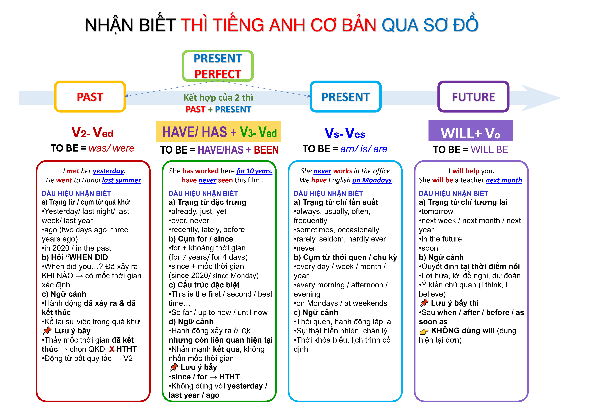

CHUYÊN ĐỀ 1: THÌ ĐỘNG TỪ & PHỐI HỢP THÌ
Mục tiêu: Nhận diện – sử dụng đúng thì động từ, tránh bẫy đề thi.

* THỐNG KÊ CHI TIẾT
- Tổng số câu thì động từ: ≈ 46 / 600 câu
- Tỷ trọng: ~7,5–8% toàn bài
- Xuất hiện ở: 18/20 đề
Phân bố theo đề (trích yếu):
- TEST 1: Q4, Q12
- TEST 3: Q7, Q15
- TEST 5: Q6, Q18
- TEST 8: Q5, Q15
- TEST 9: Q10
- TEST 10: Q5, Q18
- TEST 11: Q6, Q9
- TEST 12: Q11
- TEST 13: Q4, Q14
- TEST 14: Q9
- TEST 15: Q12, Q19
- TEST 16: Q12
- TEST 17: Q19
- TEST 18: Q9
- TEST 19: Q7, Q14
- TEST 20: Q8
👉 Nhóm bắt buộc phải ăn ≥70% số câu nếu muốn qua mức trung bình.
A. NGỮ PHÁP CẦN NẮM
📄 NỘI DUNG BÀI HỌC